R Notebook
Last updated: 2018-08-15
workflowr checks: (Click a bullet for more information)-
✖ R Markdown file: uncommitted changes
The R Markdown is untracked by Git. To know which version of the R Markdown file created these results, you’ll want to first commit it to the Git repo. If you’re still working on the analysis, you can ignore this warning. When you’re finished, you can runwflow_publishto commit the R Markdown file and build the HTML. -
✔ Environment: empty
Great job! The global environment was empty. Objects defined in the global environment can affect the analysis in your R Markdown file in unknown ways. For reproduciblity it’s best to always run the code in an empty environment.
-
✔ Seed:
set.seed(20180716)The command
set.seed(20180716)was run prior to running the code in the R Markdown file. Setting a seed ensures that any results that rely on randomness, e.g. subsampling or permutations, are reproducible. -
✔ Session information: recorded
Great job! Recording the operating system, R version, and package versions is critical for reproducibility.
-
Great! You are using Git for version control. Tracking code development and connecting the code version to the results is critical for reproducibility. The version displayed above was the version of the Git repository at the time these results were generated.✔ Repository version: c500134
Note that you need to be careful to ensure that all relevant files for the analysis have been committed to Git prior to generating the results (you can usewflow_publishorwflow_git_commit). workflowr only checks the R Markdown file, but you know if there are other scripts or data files that it depends on. Below is the status of the Git repository when the results were generated:
Note that any generated files, e.g. HTML, png, CSS, etc., are not included in this status report because it is ok for generated content to have uncommitted changes.Ignored files: Ignored: .DS_Store Ignored: .Rproj.user/ Ignored: analysis/.DS_Store Ignored: analysis/Bayes/.DS_Store Ignored: analysis/ML/.Rproj.user/ Ignored: data/.DS_Store Untracked files: Untracked: analysis/Bayes-convergence.Rmd Untracked: analysis/figure/ Untracked: docs/figure/Bayes-convergence.Rmd/ Unstaged changes: Deleted: data/derived/fit_ML_hyperbolic_mg.RData Modified: models/ITCH.stan
Observed Model description:
- Hierarchical
- Weight parameters normally distributed, non-centered.
- Gradient parameters normally distributed, and explicitly truncated. Delta and Tau between 0 and 1. Alpha between 0.01 and 0.99.
Optimal Model description:
- Same as above
Run details:
- Chains: 8
- Burnin: 4000
- Post-burnin: 10000
- Thinning: 10
- Total samples: 8000
Current issues with model:
?
Hyperbolic model
RStan output
mean se_mean sd 2.5% 25%
k_mean 0.001070394 1.183604e-05 0.0009076715 2.817458e-05 0.0003604302
k_sd 0.303227113 1.999812e-03 0.0379662646 2.428376e-01 0.2757540711
sigma_mean 0.022004510 6.825567e-05 0.0023806670 1.653716e-02 0.0206765729
sigma_sd 0.050286513 2.839496e-04 0.0071490010 3.811136e-02 0.0452986615
50% 75% 97.5% n_eff Rhat
k_mean 0.0008405841 0.001544728 0.003357576 5880.9093 1.000571
k_sd 0.2988877261 0.325963767 0.387600735 360.4271 1.013346
sigma_mean 0.0222391071 0.023603938 0.026048266 1216.5218 1.005588
sigma_sd 0.0495512496 0.054663434 0.066111696 633.8816 1.009382Coda output
Effective sample size
k_mean k_sd sigma_mean sigma_sd
6550.7735 336.3681 1516.8968 911.8988 Gelman’s Rhat
Point est. Upper C.I.
k_mean 1.002277 1.005030
k_sd 1.035093 1.073911
sigma_mean 1.007941 1.016650
sigma_sd 1.010212 1.023179Plots
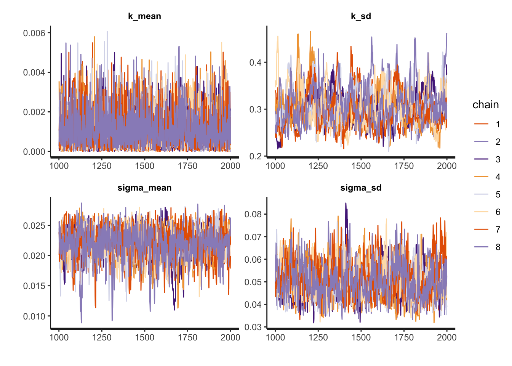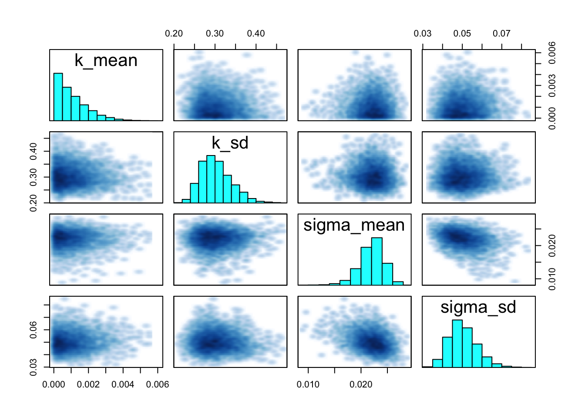
Exponential model
RStan output
mean se_mean sd 2.5% 25%
k_mean 0.001045599 1.363814e-05 0.0008678861 3.515577e-05 0.0003597166
k_sd 0.141024130 1.080035e-03 0.0169273431 1.126320e-01 0.1289901617
sigma_mean 0.015257335 6.243020e-05 0.0018914277 1.092495e-02 0.0142965242
sigma_sd 0.045137319 2.625954e-04 0.0067306944 3.419432e-02 0.0404050524
50% 75% 97.5% n_eff Rhat
k_mean 0.0008317345 0.001515709 0.003210618 4049.6258 1.001398
k_sd 0.1394091520 0.151092962 0.178490317 245.6414 1.023030
sigma_mean 0.0154891216 0.016505762 0.018237461 917.8886 1.007002
sigma_sd 0.0444708076 0.048982220 0.060247975 656.9698 1.010636Coda output
Effective sample size
k_mean k_sd sigma_mean sigma_sd
4378.4920 270.0991 1484.3313 832.2420 Gelman’s Rhat
Point est. Upper C.I.
k_mean 1.004034 1.009442
k_sd 1.045639 1.088166
sigma_mean 1.018338 1.029693
sigma_sd 1.013695 1.027251Plots
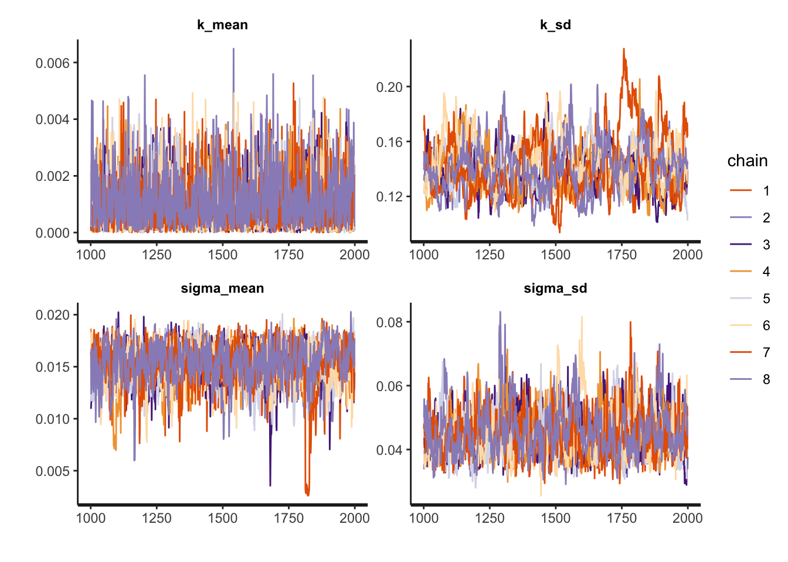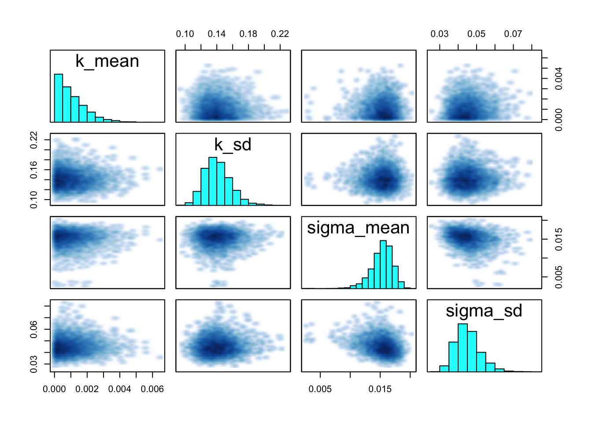
Hyperbolic model (Green & Myerson version)
RStan output
mean se_mean sd 2.5% 25%
k_mean 0.00174543 3.534232e-05 0.001776373 3.429804e-05 0.0004536283
k_sd 0.18583117 1.032395e-03 0.044644346 1.144325e-01 0.1544064166
s_mean 0.44353244 4.238765e-03 0.131851433 9.227924e-02 0.3776041581
s_sd 2.09031426 5.490575e-03 0.359372122 1.480099e+00 1.8330329250
sigma_mean 0.02040878 6.134278e-05 0.002622031 1.473840e-02 0.0188373772
sigma_sd 0.05076831 1.802996e-04 0.007299538 3.844003e-02 0.0456535219
50% 75% 97.5% n_eff Rhat
k_mean 0.001167149 0.002451255 0.006461819 2526.2616 1.001996
k_sd 0.179752203 0.211369129 0.289146589 1869.9989 1.002046
s_mean 0.464761259 0.532596562 0.650534251 967.5891 1.005921
s_sd 2.061812987 2.313030469 2.874502782 4284.0361 1.001546
sigma_mean 0.020547724 0.022170746 0.025165659 1827.0434 1.003711
sigma_sd 0.050007661 0.055084682 0.067199464 1639.0835 1.005502Coda output
Effective sample size
k_mean k_sd s_mean s_sd sigma_mean sigma_sd
2970.635 2297.438 1655.008 4731.937 2417.977 1860.661 Gelman’s Rhat
Point est. Upper C.I.
k_mean 1.003524 1.007273
k_sd 1.003064 1.007318
s_mean 1.004079 1.008352
s_sd 1.000328 1.001629
sigma_mean 1.000885 1.002645
sigma_sd 1.005356 1.012547Plots
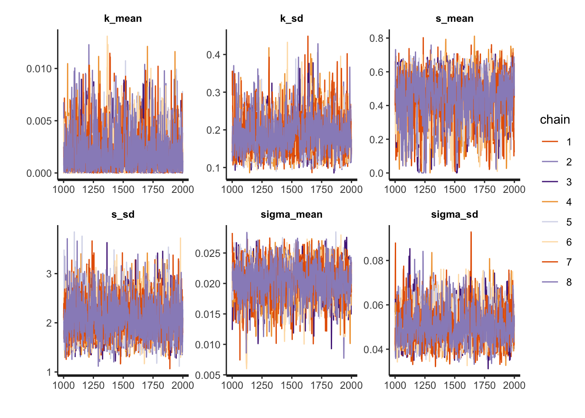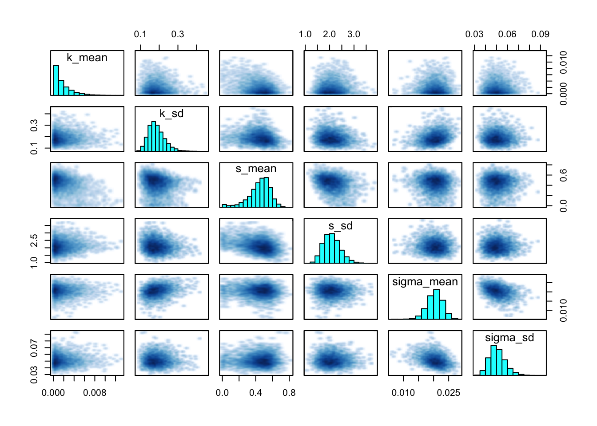
Proportional difference model
RStan output
mean se_mean sd 2.5% 25%
delta_mean -0.2295212 0.007981257 0.4292030 -1.09740835 -0.4620521
delta_sd 0.5896240 0.007484329 0.4473211 0.02375193 0.2378416
sigma_mean 1.4520743 0.017196357 0.8649765 0.09724735 0.7781905
sigma_sd 1.5806459 0.008475215 0.5806942 0.49115528 1.2000256
50% 75% 97.5% n_eff Rhat
delta_mean -0.2657947 0.005952861 0.7213156 2891.897 1.001520
delta_sd 0.4904735 0.844786481 1.6881181 3572.177 1.010676
sigma_mean 1.3656762 2.012726495 3.3854802 2530.088 1.001469
sigma_sd 1.5503073 1.932632933 2.7946213 4694.545 1.000215Coda output
Effective sample size
delta_mean delta_sd sigma_mean sigma_sd
3103.872 5420.717 3992.870 5947.508 Gelman’s Rhat
Point est. Upper C.I.
delta_mean 1.005234 1.010644
delta_sd 1.013451 1.027649
sigma_mean 1.001389 1.003424
sigma_sd 1.001502 1.002866Plots
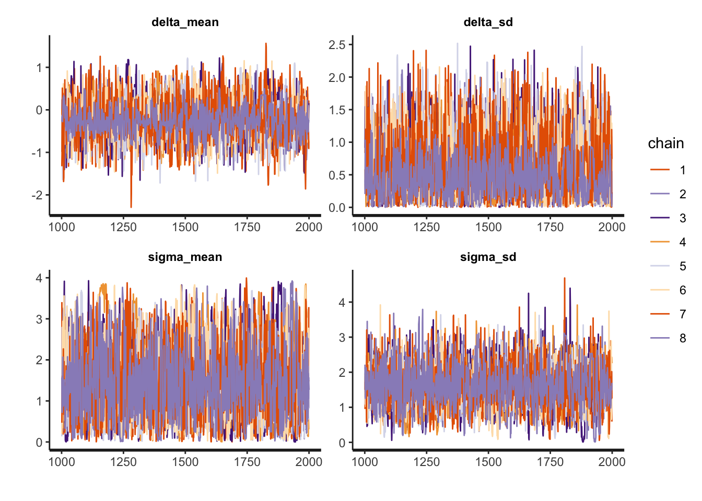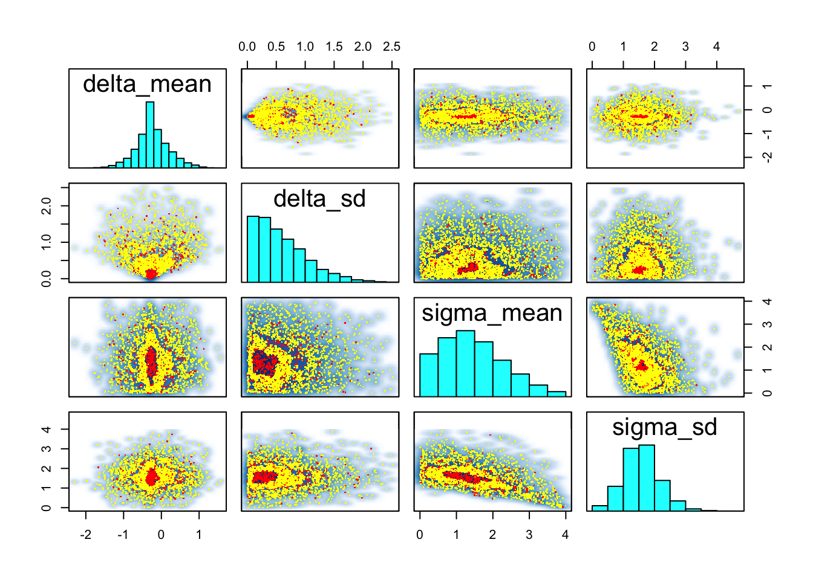
Tradeoff model
RStan output
Coda output
Effective sample size
Gelman’s Rhat
Plots
ITCH model
RStan output
Coda output
Effective sample size
Gelman’s Rhat
Plots
Constant Sensitivity Model (Ebert & Prelec, 2007)
RStan output
mean se_mean sd 2.5% 25%
alpha_mean 0.00303769 8.495466e-05 0.002540959 8.742431e-05 0.001001589
alpha_sd 0.18808021 1.331928e-03 0.027021502 1.443438e-01 0.169377537
beta_mean 0.16103475 6.888361e-04 0.030768606 9.098066e-02 0.143969096
beta_sd 0.80743533 3.405333e-03 0.106402741 6.258750e-01 0.733170885
sigma_mean 0.02280860 6.759052e-05 0.002764932 1.690384e-02 0.021170608
sigma_sd 0.04775942 1.788371e-04 0.007052693 3.601251e-02 0.042730112
50% 75% 97.5% n_eff Rhat
alpha_mean 0.002373496 0.004445915 0.009361523 894.5834 1.006913
alpha_sd 0.184812316 0.202718371 0.251449898 411.5828 1.020745
beta_mean 0.163470323 0.180614287 0.215885175 1995.1879 1.003049
beta_sd 0.798266440 0.872889441 1.048106345 976.3068 1.017678
sigma_mean 0.023023068 0.024665881 0.027738916 1673.3912 1.004476
sigma_sd 0.047088830 0.051894112 0.063941262 1555.2307 1.006942Coda output
Effective sample size
alpha_mean alpha_sd beta_mean beta_sd sigma_mean sigma_sd
2660.1696 551.9581 2837.3170 1236.7968 1897.0822 1785.4795 Gelman’s Rhat
Point est. Upper C.I.
alpha_mean 1.001914 1.005171
alpha_sd 1.013972 1.029240
beta_mean 1.004390 1.009372
beta_sd 1.007695 1.017743
sigma_mean 1.006965 1.014474
sigma_sd 1.009719 1.022716Plots
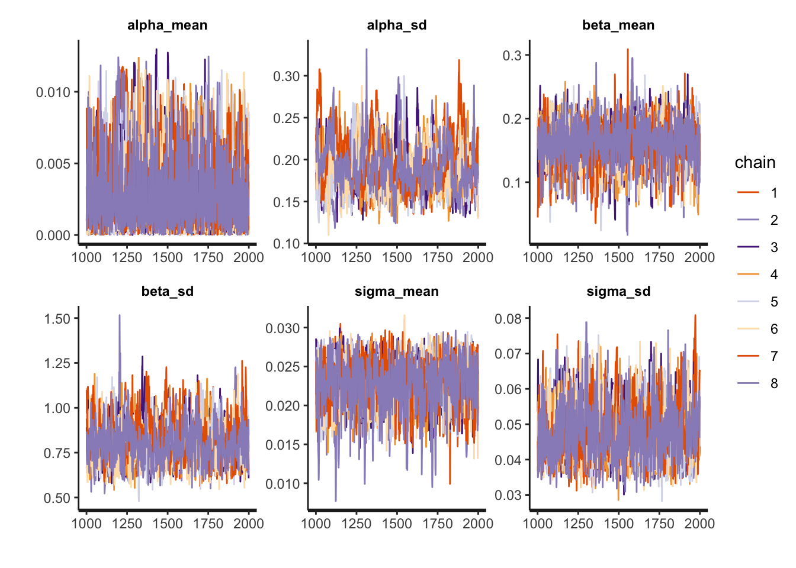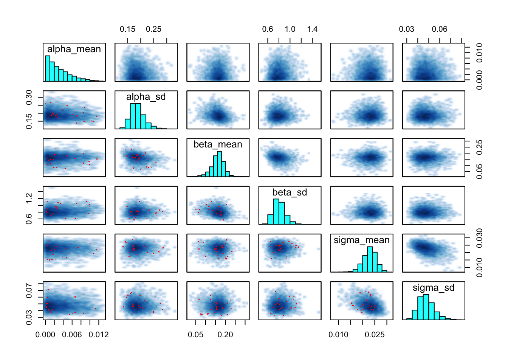
Hyperboloid Model (Mazur, 1987)
RStan output
mean se_mean sd 2.5% 25%
k_mean 0.001445548 0.0000134243 0.001200706 5.886081e-05 0.0005428407
k_sd 0.376923672 0.0014178377 0.059721869 2.747677e-01 0.3346418990
s_mean 0.262814725 0.0019019343 0.080329366 1.118715e-01 0.2099501436
s_sd 1.091962799 0.0040680409 0.148853288 8.271492e-01 0.9884711029
sigma_mean 0.023608905 0.0000677836 0.002869438 1.727953e-02 0.0218500125
sigma_sd 0.049943153 0.0001804502 0.007410158 3.751960e-02 0.0448002230
50% 75% 97.5% n_eff Rhat
k_mean 0.001145563 0.002019845 0.004474642 8000.000 1.000759
k_sd 0.372307993 0.412485018 0.510409032 1774.246 1.004476
s_mean 0.257891765 0.310427509 0.439613911 1783.847 1.007285
s_sd 1.084982314 1.184285093 1.406640734 1338.894 1.007926
sigma_mean 0.023825608 0.025579761 0.028667411 1792.027 1.006057
sigma_sd 0.049203810 0.054366004 0.065975094 1686.321 1.001438Coda output
Effective sample size
k_mean k_sd s_mean s_sd sigma_mean sigma_sd
8452.268 1890.868 2020.959 1388.986 1921.050 1804.852 Gelman’s Rhat
Point est. Upper C.I.
k_mean 1.000572 1.002067
k_sd 1.005196 1.012683
s_mean 1.011751 1.025890
s_sd 1.015570 1.035868
sigma_mean 1.008812 1.020046
sigma_sd 1.000665 1.002505Plots
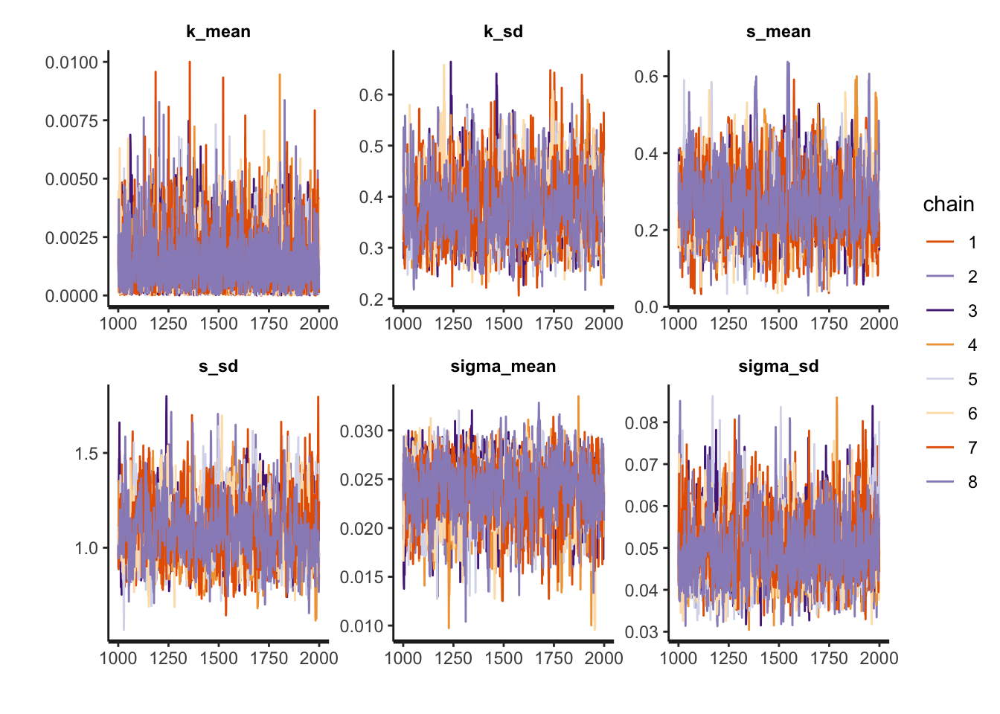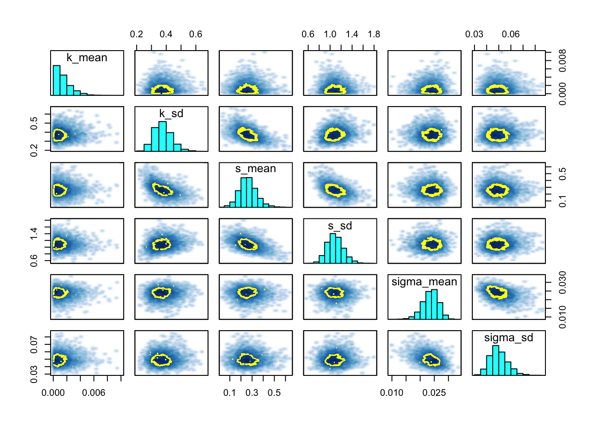
Loewenstein & Prelec’s (1992) Model
RStan output
mean se_mean sd 2.5%
alpha_mean 0.0009682053 1.095191e-05 0.0009795683 2.268606e-05
alpha_sd 0.1823081036 9.987102e-04 0.0406392800 1.159174e-01
beta_mean 0.0042196776 8.966393e-05 0.0037456063 1.165631e-04
beta_sd 0.2058306013 9.585525e-04 0.0268058430 1.599684e-01
sigma_mean 0.0201330631 6.580745e-05 0.0026911661 1.430304e-02
sigma_sd 0.0512901452 2.258424e-04 0.0076212259 3.843429e-02
25% 50% 75% 97.5% n_eff
alpha_mean 0.0002807129 0.0006821282 0.001314297 0.003649465 8000.0000
alpha_sd 0.1533558965 0.1779248868 0.206066454 0.273567087 1655.8197
beta_mean 0.0013344715 0.0031645575 0.005988588 0.013824775 1745.0532
beta_sd 0.1870192041 0.2036837877 0.221749399 0.263892047 782.0366
sigma_mean 0.0184991792 0.0203106851 0.021979135 0.024881136 1672.3646
sigma_sd 0.0459659134 0.0506392066 0.055655663 0.068275208 1138.7770
Rhat
alpha_mean 0.9993977
alpha_sd 1.0055169
beta_mean 1.0055153
beta_sd 1.0085405
sigma_mean 1.0019133
sigma_sd 1.0044579Coda output
Effective sample size
alpha_mean alpha_sd beta_mean beta_sd sigma_mean sigma_sd
11638.1509 2191.7902 2383.5104 858.3026 1642.1991 1350.7417 Gelman’s Rhat
Point est. Upper C.I.
alpha_mean 1.001309 1.001915
alpha_sd 1.007537 1.015729
beta_mean 1.007254 1.015093
beta_sd 1.008308 1.017053
sigma_mean 1.003549 1.008201
sigma_sd 1.005693 1.012514Plots
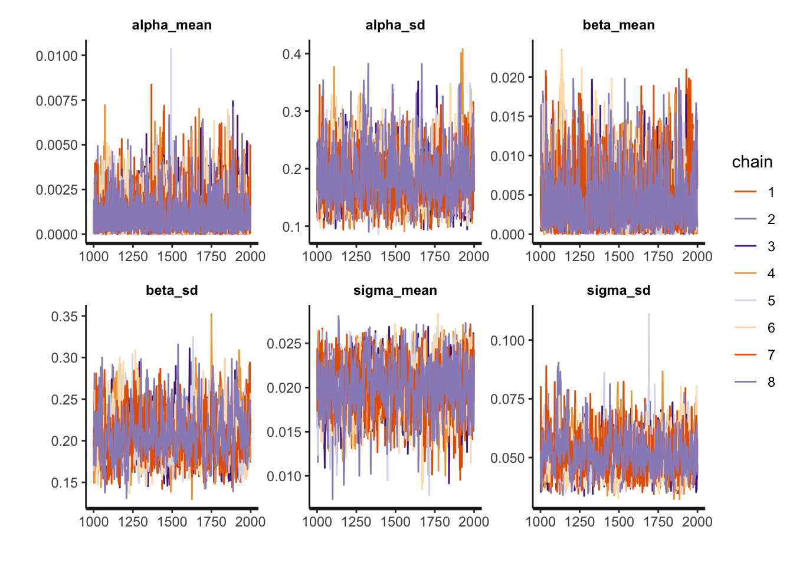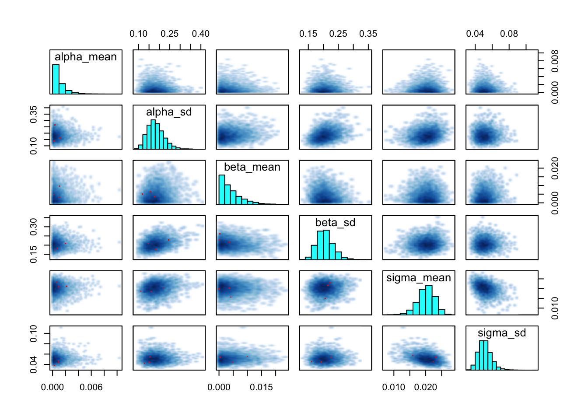
Double Exponential Model (McClure et al., 2007)
RStan output
mean se_mean sd 2.5% 25%
omega_a 1.13032309 0.203212207 0.52808979 3.506473e-01 0.662542836
omega_b 0.91939781 0.211839929 0.50805585 3.193762e-01 0.520085209
beta_mean 0.01918719 0.015283311 0.04034322 5.576149e-05 0.000635931
beta_sd 0.41966385 0.221070165 0.47386702 6.241621e-02 0.076597082
delta_mean 0.04149755 0.016355861 0.05391597 9.584187e-05 0.001233507
delta_sd 0.65154952 0.223135751 0.49928997 6.498215e-02 0.087607369
sigma_mean 5.32357273 0.018951047 0.86230533 3.638785e+00 4.736222683
sigma_sd 9.19009275 0.007986162 0.55601366 8.099899e+00 8.815937631
50% 75% 97.5% n_eff Rhat
omega_a 1.11568927 1.50153980 2.2132122 6.753299 1.542153
omega_b 0.73430731 1.26682517 2.0873770 5.751846 1.772170
beta_mean 0.00161938 0.01088887 0.1429347 6.967968 1.498998
beta_sd 0.08953587 0.82308394 1.4671363 4.594653 2.715835
delta_mean 0.01456524 0.07062375 0.1774969 10.866459 1.246414
delta_sd 0.74907742 1.00852616 1.6016249 5.006882 2.174807
sigma_mean 5.34196642 5.90379427 6.9881392 2070.406920 1.000499
sigma_sd 9.18869994 9.54796456 10.3058481 4847.241881 1.000433Coda output
Effective sample size
omega_a omega_b beta_mean beta_sd delta_mean delta_sd
2415.951 2103.730 6075.422 1565.999 4704.981 2015.534
sigma_mean sigma_sd
2497.497 4963.913 Gelman’s Rhat
Point est. Upper C.I.
omega_a 1.729374 2.408884
omega_b 1.999201 2.979171
beta_mean 1.798548 3.980408
beta_sd 3.157420 6.356229
delta_mean 1.305798 1.717858
delta_sd 2.528022 4.046478
sigma_mean 1.001800 1.005144
sigma_sd 1.000368 1.001802Plots
 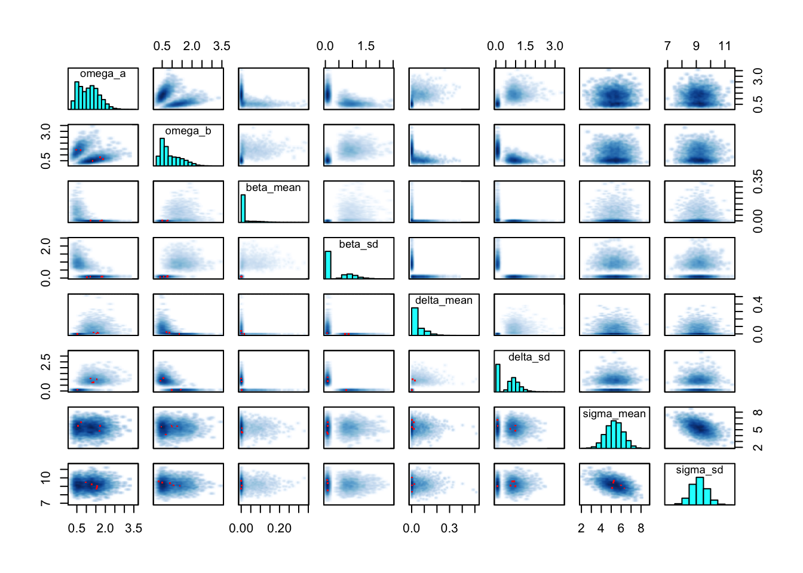
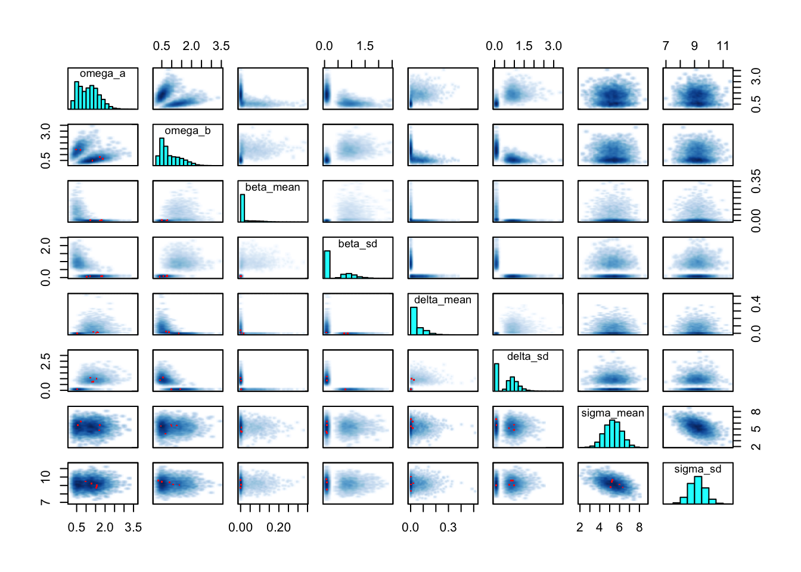
Additive Utility Model (Killeen, 2009)
RStan output
mean se_mean sd 2.5% 25%
beta_mean 0.793400242 1.157541e-03 0.0548411513 0.6804557294 0.758940488
beta_sd 0.497913664 1.377198e-03 0.0812448472 0.3575576399 0.441510563
lambda_mean 0.162778277 1.534978e-03 0.1372926090 0.0056764470 0.057343391
lambda_sd 9.283338547 6.803426e-03 0.6085168972 8.1166942112 8.879465337
sigma_mean 0.001997736 1.927473e-05 0.0008515134 0.0002317781 0.001436047
sigma_sd 0.027226098 1.108945e-04 0.0040176991 0.0204416037 0.024394629
50% 75% 97.5% n_eff Rhat
beta_mean 0.796464193 0.830601229 0.892775424 2244.605 1.0023468
beta_sd 0.490692815 0.546657045 0.680814839 3480.159 1.0003539
lambda_mean 0.130121633 0.231616471 0.510965708 8000.000 0.9997838
lambda_sd 9.274921896 9.685597696 10.492448997 8000.000 1.0004782
sigma_mean 0.002057161 0.002607264 0.003554659 1951.670 1.0056048
sigma_sd 0.026842744 0.029681916 0.036051476 1312.607 1.0052516Coda output
Effective sample size
beta_mean beta_sd lambda_mean lambda_sd sigma_mean sigma_sd
2294.566 3587.579 8203.416 9423.649 2370.023 1359.421 Gelman’s Rhat
Point est. Upper C.I.
beta_mean 1.0034994 1.008640
beta_sd 1.0028521 1.005921
lambda_mean 0.9999401 1.000629
lambda_sd 1.0019555 1.005660
sigma_mean 1.0037633 1.009059
sigma_sd 1.0051243 1.011878Plots
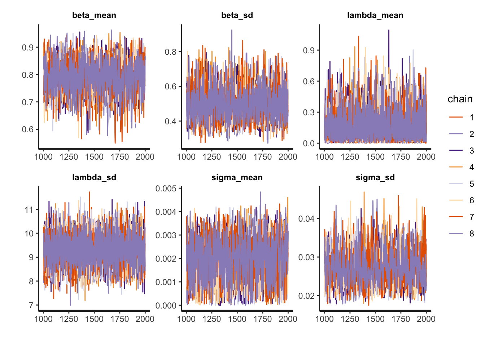
Session information
sessionInfo()R version 3.5.1 (2018-07-02)
Platform: x86_64-apple-darwin15.6.0 (64-bit)
Running under: OS X El Capitan 10.11.6
Matrix products: default
BLAS: /Library/Frameworks/R.framework/Versions/3.5/Resources/lib/libRblas.0.dylib
LAPACK: /Library/Frameworks/R.framework/Versions/3.5/Resources/lib/libRlapack.dylib
locale:
[1] en_AU.UTF-8/en_AU.UTF-8/en_AU.UTF-8/C/en_AU.UTF-8/en_AU.UTF-8
attached base packages:
[1] stats graphics grDevices utils datasets methods base
other attached packages:
[1] coda_0.19-1 rstan_2.17.3 StanHeaders_2.17.2
[4] ggplot2_3.0.0
loaded via a namespace (and not attached):
[1] Rcpp_0.12.17 compiler_3.5.1 pillar_1.3.0
[4] git2r_0.22.1 plyr_1.8.4 workflowr_1.1.1
[7] bindr_0.1.1 R.methodsS3_1.7.1 R.utils_2.6.0
[10] tools_3.5.1 digest_0.6.15 lattice_0.20-35
[13] evaluate_0.10.1 tibble_1.4.2 gtable_0.2.0
[16] pkgconfig_2.0.1 rlang_0.2.1 yaml_2.1.19
[19] bindrcpp_0.2.2 gridExtra_2.3 withr_2.1.2
[22] stringr_1.3.1 dplyr_0.7.6 knitr_1.20
[25] stats4_3.5.1 rprojroot_1.3-2 grid_3.5.1
[28] tidyselect_0.2.4 inline_0.3.15 glue_1.2.0
[31] R6_2.2.2 rmarkdown_1.10 purrr_0.2.5
[34] magrittr_1.5 whisker_0.3-2 backports_1.1.2
[37] scales_0.5.0 htmltools_0.3.6 assertthat_0.2.0
[40] colorspace_1.3-2 labeling_0.3 KernSmooth_2.23-15
[43] stringi_1.2.3 lazyeval_0.2.1 munsell_0.5.0
[46] crayon_1.3.4 R.oo_1.22.0 This reproducible R Markdown analysis was created with workflowr 1.1.1